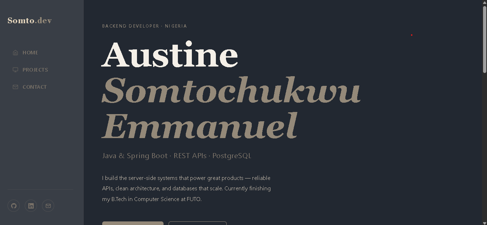

My Work
Projects & Case Studies
A selection of backend systems, APIs, and web projects I've built — each one a lesson in clean architecture and practical problem-solving.
Student Registry API
A full CRUD REST API built with Spring Boot for managing student records across departments. Features paginated endpoints, input validation, and a PostgreSQL backend with JPA/Hibernate ORM. Tested end-to-end with Postman.

Spring Boot REST Controller
Standalone REST controller built from memory using @RestController, @GetMapping, and @PostMapping annotations. Demonstrates solid understanding of Spring MVC patterns without scaffolding tools.

Personal Portfolio Website
This portfolio site — built with pure HTML, CSS, and vanilla JavaScript. Features a left sidebar layout, masonry grid, scroll animations, contact form validation, and a lightbox gallery. Deployed on Vercel.
PostgreSQL + JPA Integration
Spring Boot application integrating PostgreSQL via Spring Data JPA. Implements @Entity mappings, repository pattern, and database migrations — demonstrating practical ORM usage beyond theory.